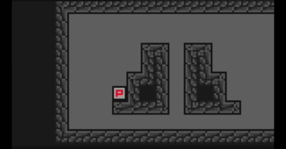
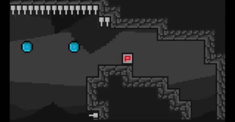

Bonjour à tous, c'est Abdourahmane ! Voici la Newsletter 5 ! Si vous venez de découvrir le projet, n'hésitez pas à regarder les newsletters précedentes pour comprendre ce qui a été accompli !
Cette semaine, plusieurs fonctionnalités ont été ajoutés : le wall slide, l'orbe de dash, et les menus. Ces tâches ont été répartis en deux groupes.
Le wall slide permet au joueur de glisser sur un mur, après avoir sauter dessus. Cette fonctionnalité est utile, si le joueur veut réaliser un saut par la suite.
L'orbe de dash, permet au joueur, lorsqu'il saute sur l'orbe, de réaliser un dash. Cet objet sera utile pour franchir des obstacles ...
Le menu ci-dessous nous permet de choisir si nous voulons commencer une nouvelle partie, gérer les options du jeu, ou quitter le jeu.

Durant cette semaine, nous nous occuperons du wall jump, de la sauvegarde du niveau du joueur, et nous implémenterons le menu Pause.
N'hésitez pas à suivre le développement et à nous poser des questions sur notre serveur Discord.
Merci d'avoir lu cette troisième newsletter et à la prochaine !
Team Spelunca.
Rédacteur : Abdourahmane GADIO